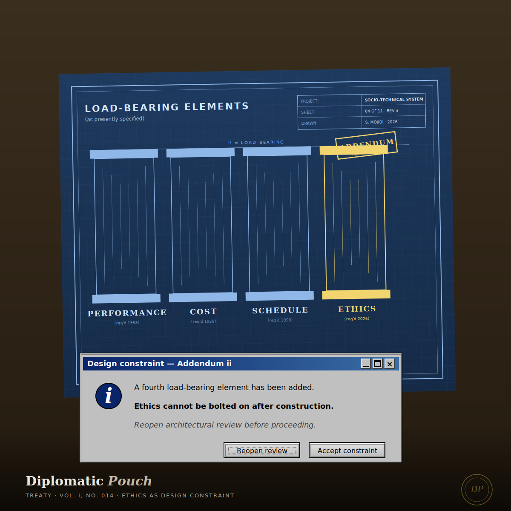

Ethics as Design Constraint
An argument that ethical review is not a brake applied after the fact, but a design discipline exercised during — and the practitioners who make this move early will define the next generation of the field.

I want to start with a sentence that is going to irritate some of my colleagues, which is fine. Ethics in cybersecurity is almost always discussed as a brake. The ethical review happens after the technical design is complete, in a meeting that gets added to the calendar once the ship date is already set, with a reviewer whose institutional role is to find problems and whose institutional reward is to be overruled. This arrangement produces the ethics we have, which is to say: the appearance of ethical consideration, exercised late enough in the process that only cosmetic changes are available, documented thoroughly enough to defend the organization if something goes wrong, and discarded as needed when the schedule pressure arrives.
This is not ethics. This is ethics theater. The practitioners who stage it know it is theater; the leaders who commission it know it is theater; the auditors who sign off on it know it is theater; the users whose lives it is supposedly protecting are never invited to see the show. The entire structure exists so that when harm occurs, the organization can point to the review process and say that the harm was unforeseeable, even though at least one person in the room during the review raised exactly the concern that produced the harm.
The argument of this dispatch is that the practice has to move, and it has to move this year, from ethics-as-brake to ethics-as-design-constraint. These are not the same practice. They produce different artifacts, require different skills, and are rewarded by different institutional structures. The move is not optional. The pace of AI deployment is making the brake model structurally impossible. The organizations that figure out the design-constraint model will build the products that are still trusted in five years. The organizations that do not will build the products that are not.
What a design constraint actually is
In engineering, a design constraint is a non-negotiable property the design must satisfy. The product has to run in under 200 milliseconds. The device has to fit in a pocket. The medication has to pass through the digestive tract without being destroyed. Design constraints are not aesthetic preferences. They are specification. If the design does not satisfy the constraint, the design is not finished, regardless of how clever its other properties are.
What distinguishes a design constraint from a review criterion is that the constraint shapes the design during the design, not after. An engineer designing for sub-200-millisecond latency does not design the fastest possible system and then test whether it meets the latency bar. The engineer designs within the latency bar from the first sketch, choosing data structures and architectures that make the bar reachable. The bar is a property of the design problem, not a property of the finished product.
Ethics in most of our organizations is currently structured the second way. The engineer designs the system that solves the stated problem, and then an ethics reviewer checks whether the finished system passes an ethics test. The test is almost always a weaker constraint than the business constraints already shaping the design, which is why ethics almost always loses when it conflicts with ship dates or feature parity or competitive response. The ethics never got to shape the design. It got to grade it, at a moment when changing the grade would require redoing the design, which no one is going to authorize.
Ethics in most of our organizations gets to grade the design. It does not get to shape it.
The move I am arguing for is to put ethics in the position of the latency bar. Not as a test applied at the end. As a specification the design must satisfy from the first sketch. Which means the engineer, during the design phase, is already asking the ethics-shaped questions: who is this system for, who is affected by it, what distribution of outcomes does it produce across different populations, what categories of harm does it make easier or harder, and what obligations does its existence create that did not exist before. These questions are not external to the design. They are specification inputs.
What this means for cybersecurity specifically
Cybersecurity is particularly well-positioned to adopt the design-constraint model, and particularly poorly-structured to execute on it. The positioning is good because our field already thinks in terms of properties the system must satisfy. We already have the CIA Triad as a design specification. We already have threat modeling as a discipline that happens during design rather than after. We already know how to translate non-functional requirements into architectural choices. The skill set is adjacent.
The structural problem is that the triad we inherited specifies properties that protect information rather than properties that protect people. The dispatch I wrote earlier in this volume on what the triad was never designed to protect laid out the full version of that argument. The short version, for this Treaty, is that the ethical design-constraint move requires extending the triad with properties about human outcomes. Who the system protects. Who it does not. What distribution of security outcomes it produces across the populations it serves. Whether those outcomes are documented, measurable, and auditable.
I now phrase this to the teams I work with as the principle of reliability across difference, which was the subject of another dispatch earlier in this publication. A security system is only as reliable as its reliability for its least-protected user. If your fraud detection works beautifully for the majority of your users and badly for a specific minority, your fraud detection does not work. It works for some. The gap between the two outcomes is not a tuning problem to be addressed in the next release. The gap is a specification failure that was baked in during design, because the design was never required to satisfy the reliability-across-difference constraint from the first sketch.
AI governance is forcing this conversation
I am currently responsible for the enterprise AI governance program at a global data and AI company. I will not describe the specifics of our rollout, but I will describe the shape of the problem, because the shape is the same at every company doing serious AI deployment in 2026.
The ethics-as-brake model is structurally impossible for agentic AI systems. The brake model assumes that a human reviewer sits between the design decision and the deployment decision, with enough time to inspect the artifact and raise objections before it ships. Agentic systems compress that interval to zero. The system is making decisions in production that no human reviewed. The system is making decisions in production that no human will review, because the volume is too high and the latency is too low. The brake has no surface to grip.
The only workable model for AI governance is to put the ethical constraints into the design of the system itself. Not as a filter applied after the model produces an output. As a property of the system architecture that shapes what outputs the model can produce in the first place. The specification has to be upstream of the generation, because once the generation is happening at machine speed, downstream filtering is cosmetic.
This is uncomfortable for a lot of practitioners because it requires making ethical judgments at the architectural level — decisions about scope, access, authority, escalation, and refusal — at a moment when the business pressure is to ship fast and defer the hard decisions to a later version. There is no later version with agentic systems. The version you shipped is the version that is now in production making autonomous decisions about real people. The decisions it makes are the ethical decisions you did not make explicitly during design.
What this requires of practitioners
The practitioners who are going to lead this transition are the ones who develop three capabilities that are not currently standard in security engineering education.
Fluency in the vocabulary of impact. The ability to describe a system's effects on real people in specific, measurable, non-abstract terms. Not 'this might harm users.' Rather: 'this will produce false positives on legitimate transactions by customers in this demographic at approximately this rate, which will result in this number of locked accounts per quarter, which will fall disproportionately on users whose transaction patterns match this profile.' That is impact vocabulary. It is specific, measurable, and actionable. Without it, ethical review becomes an exchange of generalities.
The authority to say no during design, not after. This is a structural requirement that most organizations have not yet granted. If your ethics-informed practitioner can only object after the design is complete, you have the brake model. If they are in the room during the architectural decisions, with the authority to require changes before implementation begins, you have the design-constraint model. The authority to say no during design is not a nice-to-have. It is the whole mechanism.
The willingness to be unpopular on a predictable schedule. Design constraints that are actually binding produce friction. The practitioner who enforces them will slow some projects down, kill some features, and require redesigns that other people did not want to do. This produces institutional resentment on a predictable rhythm. Practitioners who need to be liked in every meeting will not survive in this role. Practitioners who understand that being liked in every meeting is a sign that they are not actually enforcing the constraints will. The capacity to absorb friction without softening into agreement is a professional skill. It can be developed. Most practitioners have never been told it was part of the job.
What this requires of organizations
I want to name three structural changes that organizations have to make for the design-constraint model to be executable at scale. These are the asks I now make of every leadership team I advise.
First, ethical review has to be upstream of the architectural decision, not downstream. This means the practitioner with the ethics mandate is in the room when the system is being specified, not when the implementation plan is being reviewed. The move is a calendar move. It costs nothing. It requires only that the organization reorder which meeting the ethics voice is invited to.
Second, the ethics mandate has to carry blocking authority, not advisory authority. If the ethics voice can only recommend, the ethics voice will be overruled whenever schedule pressure arrives, which is always. If the ethics voice can block, the ethics voice becomes a design constraint. The move is a governance move. It costs the organization some velocity in the short term and buys the organization a product that does not have to be recalled in the medium term.
Third, the organization has to be willing to publish the design constraints it has committed to. Not internally. Externally. To the users. In language the users can read. This is the move most organizations will refuse, and the refusal is a tell. An organization that will not tell its users what ethical constraints its systems satisfy has committed to no constraints that can be enforced. The willingness to publish is the proof that the constraint is real.
The practitioner's choice
I will close with the thing I say to the apprentices I mentor at Hacking the Workforce when they come to me conflicted about an assignment that feels ethically off. The conflict is not a weakness. The conflict is professional data. It is your training detecting a pattern that your organization's incentives have not yet detected, or has detected and chosen to ignore. The conflict is the moment you get to decide what kind of practitioner you are going to be.
You can be the practitioner who ships the thing anyway and lets the ethical burden fall on someone further down the chain, which will happen about half the time in a career spent in this field. Or you can be the practitioner who learns to translate the conflict into language that reaches the decision-makers in time to change the design, which is the harder path and the one that produces the career you actually want.
The field needs more of the second kind. The AI transition will decide which generation of security practitioners is remembered as the one that saw this coming and built the design discipline the moment required, and which generation is remembered as the one that was in the room when the constraints were being set and said nothing. I know which one I am trying to be. I know which one I am trying to produce more of. The design constraints we set this year will shape the systems a billion people will use in the next decade. The ethics is not the brake. The ethics is the specification. Build to the specification. The brake was never going to be enough.
Next dispatch ── A Memoir on the long T-shape of a security career.
— Dr. Safi Mojidi